다시 만든 한 대
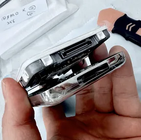
남기는 건 메인보드와 프레임뿐.
버튼 붙은 메인보드와 프레임만 남기고, 나머지는 전부 새것으로 다시 만듭니다
실제 작업 사진 · 리퍼 제품
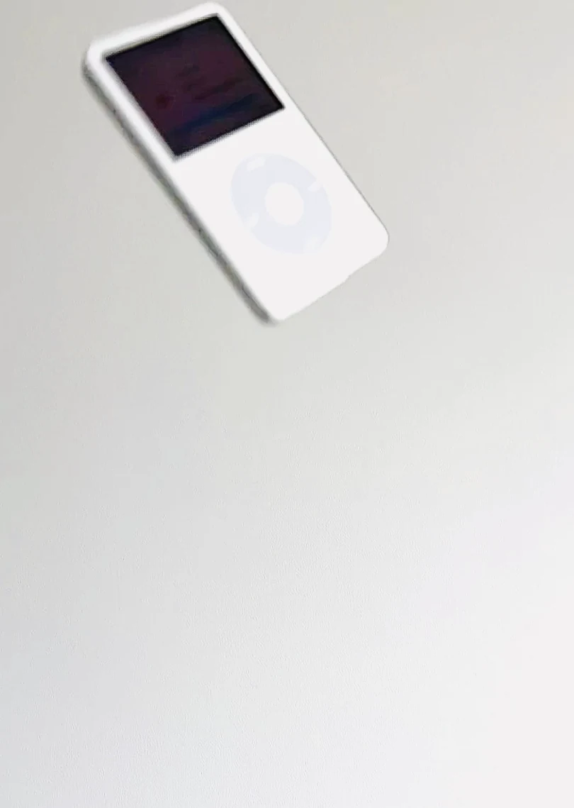
iPod
그때는 못 샀지만
이제는 살 수 있지
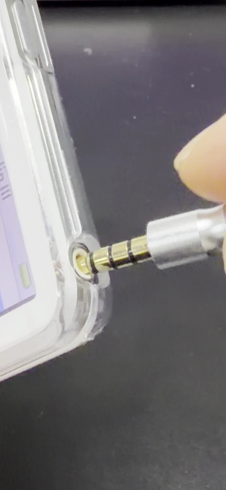
불편합니다.
그래서
갖고 싶습니다.
선을 꽂아야소리가 납니다.그게 좋습니다.
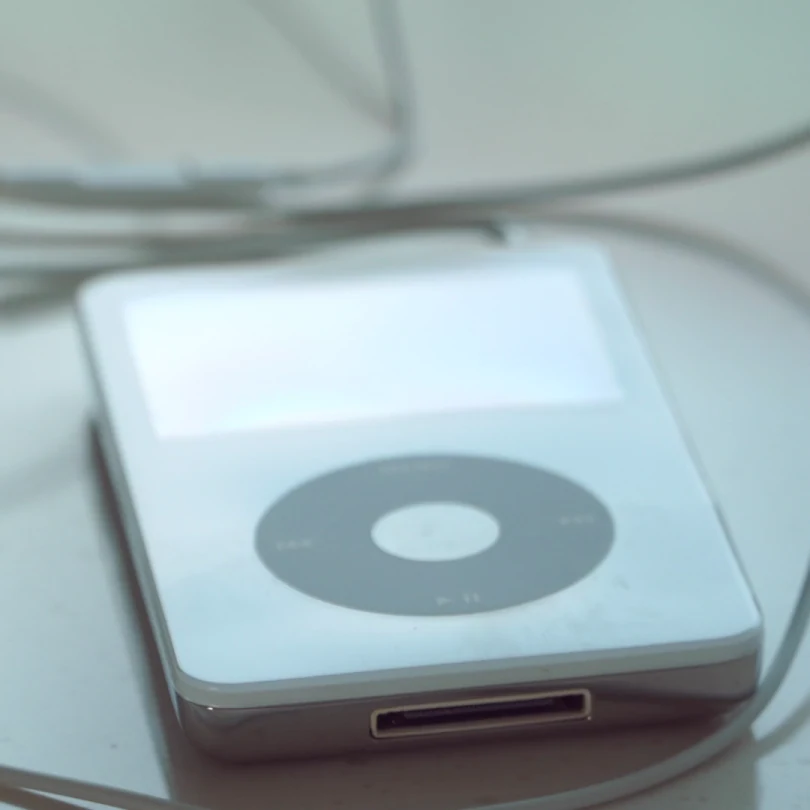
가지고 싶어도 가질 수 없던 기억.어른이 된 지금은, 가질 수 있습니다.
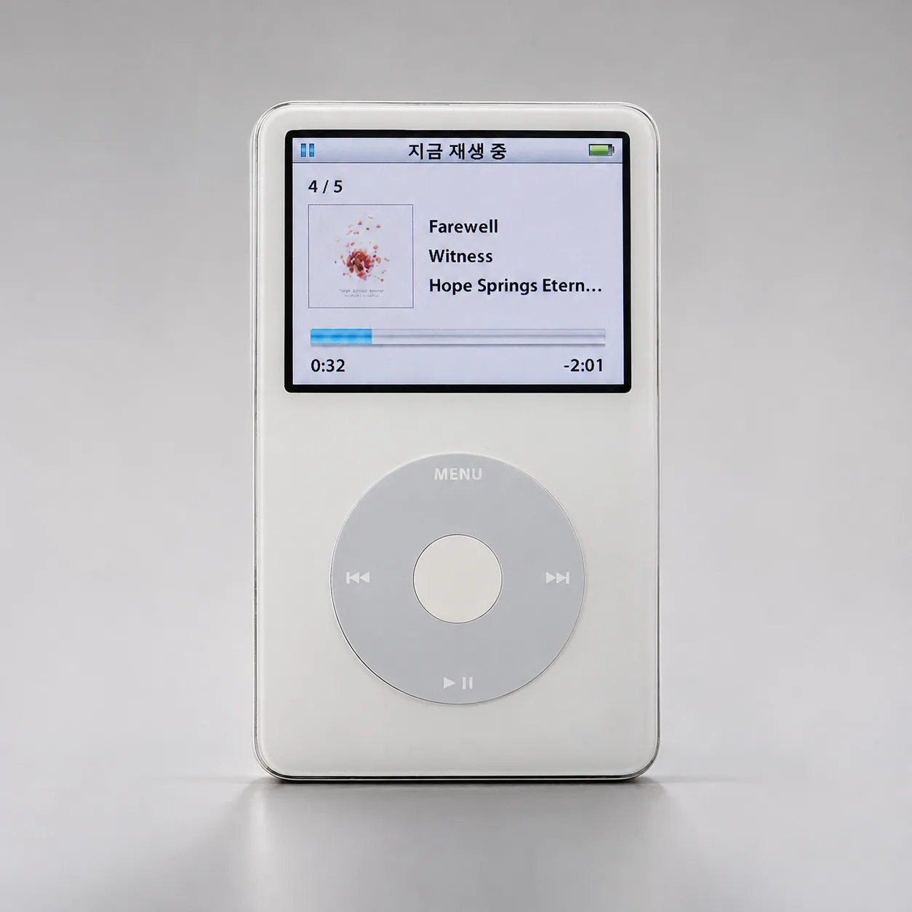
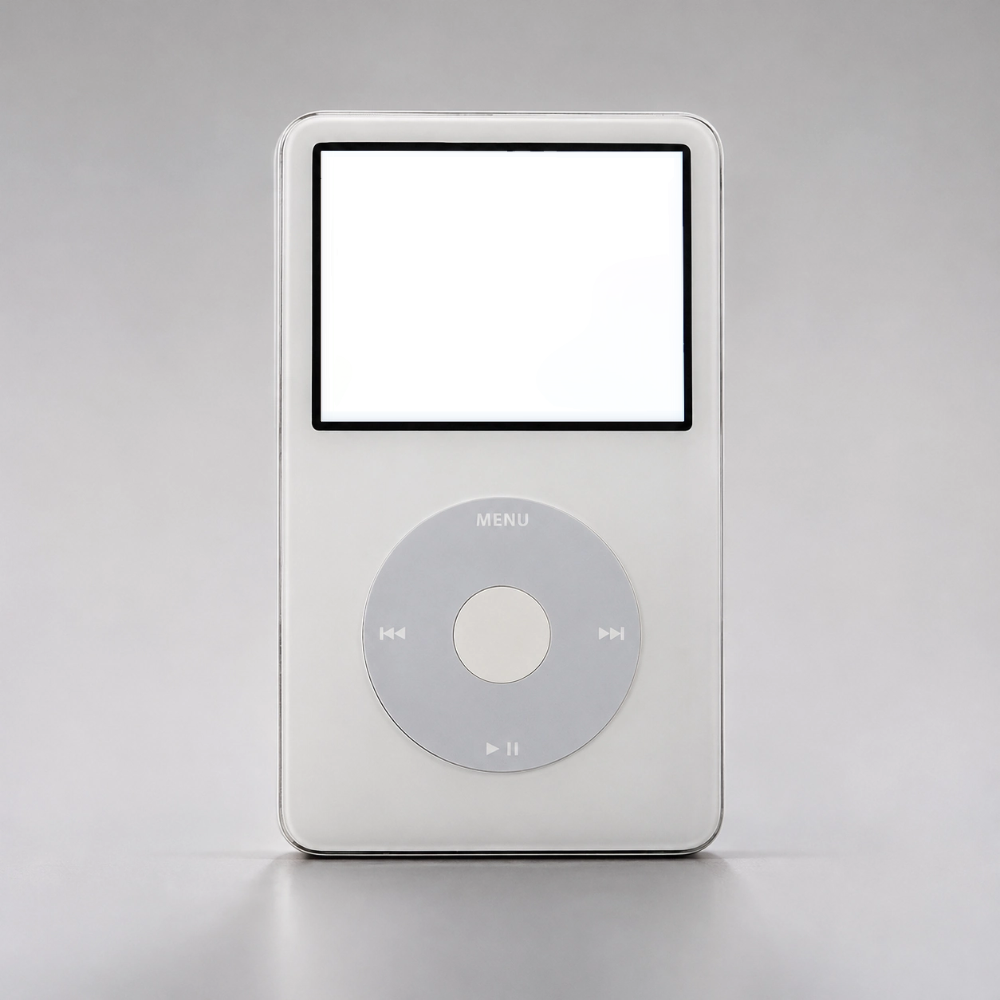
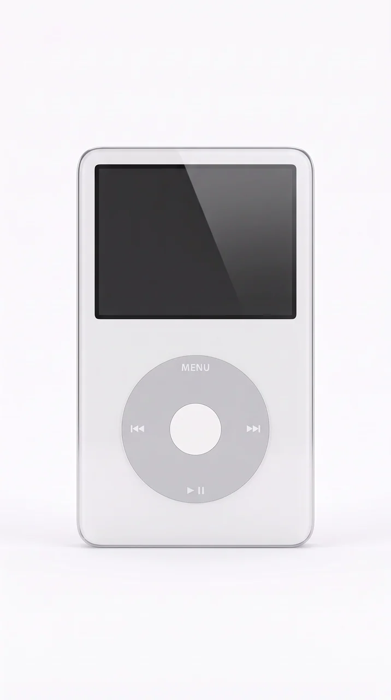
손가락으로 돌려 보세요
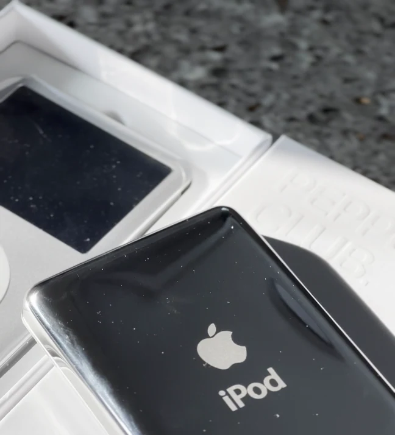
스트리밍 없음.
알림 없음.
곡은 직접 담습니다.
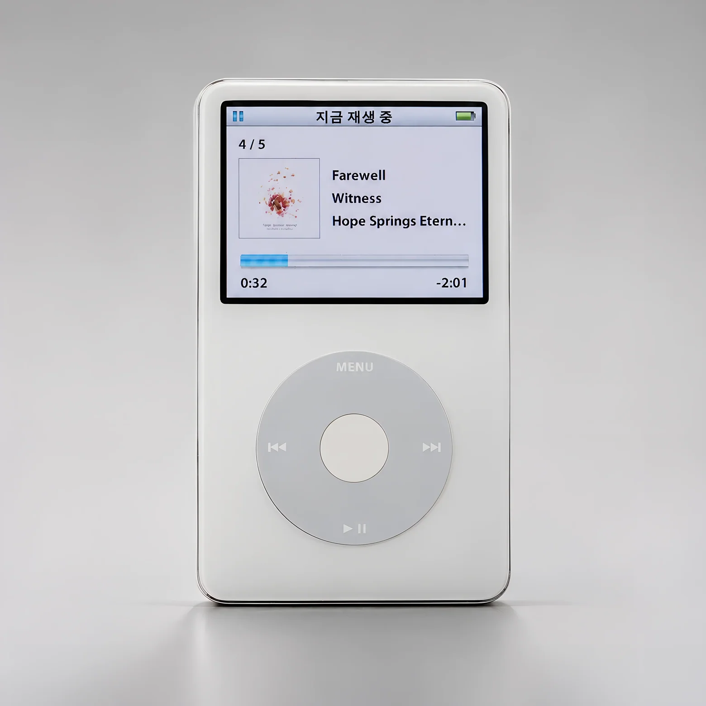
약 10,000곡
64GB = 약 1만 곡 (MP3 한 곡 약 6MB 기준)
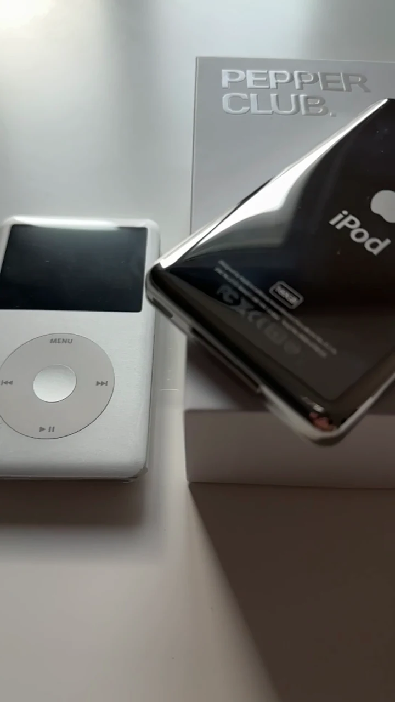
이 낭만,어디서 사야할까요.
페퍼클럽에서.
휠을 돌려 보세요.

남기는 건 메인보드와 프레임뿐.
버튼 붙은 메인보드와 프레임만 남기고, 나머지는 전부 새것으로 다시 만듭니다
실제 작업 사진 · 리퍼 제품
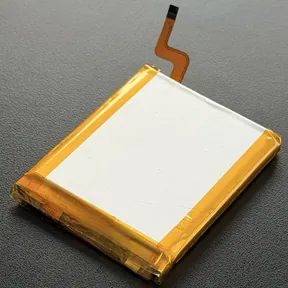
1950mAh
새것입니다
원래는 약 400~580mAh
사양 기준 음악 재생 최대 약 32시간
배터리 KC 안전확인, 페퍼클럽 이름으로 받았습니다
KC 안전확인 신고 ZU10670-22001
KTL 2022.08
본체 전파인증(KC)도 받았습니다
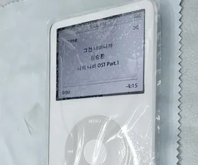
2번 검사
두 번 켜 보고 보냅니다
만든 직후 한 번, 출고 때 한 번 더
6칸 직접 점검하고 보냅니다
SSD
저장장치는 SSD
표기 용량 그대로 읽고 씁니다
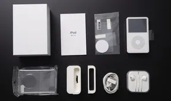
8개 구성
이게 전부 기본 구성입니다
따로 사실 것 없이 다 갑니다
충전 겸용 독스탠드와 크리스탈 케이스까지 기본
180일 무상
7일 교환·환불, 180일 무상
그 뒤 평생 실비(부품값·공임만)
7일이 지난 뒤 왕복 택배비 7,000원은 고객 부담입니다
15시 전 주문
평일 15시 전 주문하면 당일출고
국내에서 바로 발송
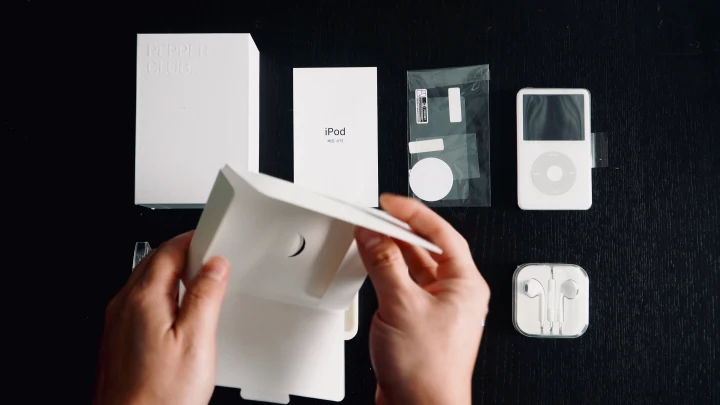
따로 사실 것 없이 다 갑니다
받는 날·검수·반송, 여기서 갈립니다
| 해외직구 (일반적인 조건) | 페퍼클럽 | |
|---|---|---|
| 배터리 | 원래 약 400~580mAh | 직접 KC 안전확인 받은 1950mAh, 새것 |
| 저장 | 판매처마다 다름 | SSD 표기 용량 그대로 |
| 받는 날 | 10일~3주 | 국내에서 바로 발송 |
| 구성 | 판매처마다 다름 | 본체·박스·설명서·필름·30핀 케이블·이어폰·충전 독·크리스탈 케이스 |
| 받은 뒤 | 해외 반송·소통 어려움 | 7일 교환·환불, 180일 무상 A/S |
| 검수 | 확인 어려움 | 6칸 직접 점검 |
기다릴 수 있으면 직구,
국내에서 바로 받으려면 페퍼클럽입니다
본체·박스·설명서·필름·30핀 케이블, 이어폰·독스탠드·크리스탈 케이스까지 기본으로 들어 있습니다. 따로 사실 것 없이 다 갑니다.
사양 기준 음악 재생 최대 약 32시간입니다.
문의는 톡톡 QR로 받습니다.
7일이 지난 뒤 왕복 택배비 7,000원은 고객 부담입니다.
평일 15시 전 주문하면 당일출고
7일 교환·환불, 180일 무상 A/S
와디즈 5억+ · 후기 1,200건+
페퍼클럽 네이버 스마트스토어로 이동합니다
페퍼클럽은 Apple의 공식 판매처가 아닙니다. Apple, iPod는 Apple Inc.의 상표입니다. 사진 속 제품에 새겨진 로고는 제품 자체의 표기입니다.